In this lab, you will enable the Web Client in Application Manager and use the Web Client fast
switch to start Web Client. The Web Client fast switch opens your InTouch frame windows in the
default Web browser. You will then navigate and display both InTouch application windows and
graphics in the browser.
Additionally, you will use the Web Client to search for graphics, zoom and pan, view and
acknowledge alarms, and interact with your InTouch application.
Objectives
Upon completion of this lab, you will be able to:
Enable Web Client in Application Manager
Use the Web Client fast switch to open the Web Client
Pan and zoom a graphic in a web browser using a mouse and keyboard
Navigate and view Application windows using the Web Client
Use Navigation Search
Visualize and acknowledge alarms in Web Client
Web-based SCADA/HMI dashboard for the Mixer process running in Chrome browser at localhost/InTouch/. Shows the $MixerView with a navigation bar (Mixers, Line 1, Line 2, Alarm Overview, Historical Alarms, Historian Client Trend), user info (student/Training Student, Access Level 0), an active alarms table with unacknowledged communication-loss and process-value alarms, left-side production metrics (Consumed Materials and ProducedProducts bar charts), and the main right-side Mixer100 Line1 process view with pumps, inlet/outlet valves, mixer vessel, agitator, and real-time Level and Temperature trend graphs.
Disable Security
First, you will disable security for training purposes. This is because Web Client relies on Windows
authentication. You will disable Galaxy security for this lab.
1.
Close WindowMaker and check in $MixerView.
2.
In the IDE, on the Galaxy menu, select Configure | Security.
3.
In Authentication Mode, select None.
4.
Click Save.
A Galaxy security message appears.
5.
Click OK to shut down the IDE.
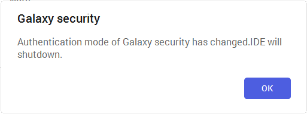
Galaxy security confirmation dialog box stating 'Authentication mode of Galaxy security has changed. IDE will shutdown.' with an OK button, indicating the IDE must restart after changing the authentication mode to None for the Web Client lab.
Enable Web Client
Next, you will enable Web Client. Additionally, because Web Client uses local security groups to
manage the list of users that can access it, you must also disable a security feature used in the
Mixer graphic.
6.
From the Windows Start menu, open Application Manager.
AVEVA Application Manager opens.
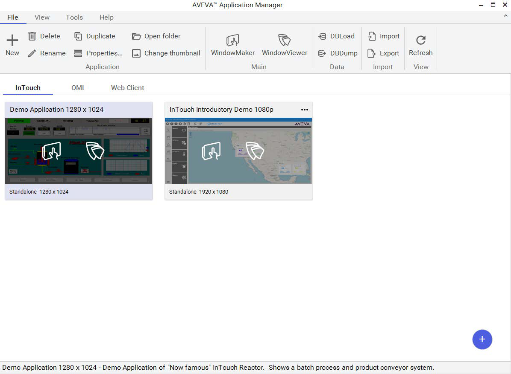
AVEVA Application Manager main window with the InTouch tab selected, showing the ribbon toolbar (New, Delete, Rename, Properties, Duplicate, WindowMaker, WindowViewer, DBLoad, DBDump, Import, Export, Refresh) and two demo application tiles: 'Demo Application 1280 x 1024' and 'InTouch Introductory Demo 1080p'.
7.
Select the Web Client tab.
8.
On the toolbar, click Web Client.
Notice the small clock on the Web Client icon, which indicates that the Web Client is not
started.
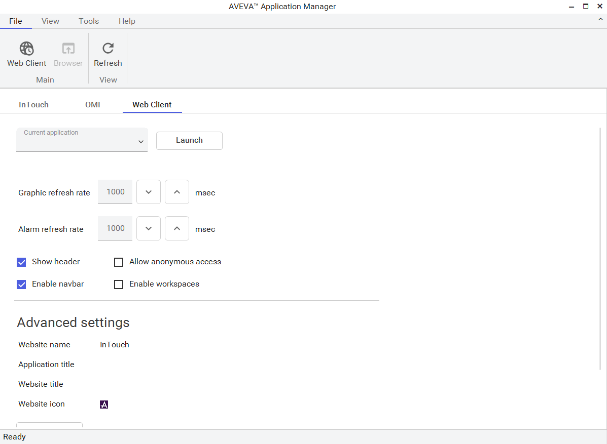
AVEVA Application Manager with the Web Client tab active, displaying the Web Client configuration panel: Graphic refresh rate (1000 msec), Alarm refresh rate (1000 msec), checkboxes for Show header, Enable navbar, Allow anonymous access, and Enable workspaces, plus Website name field set to 'InTouch' and Website icon showing the AVEVA logo.
AVEVA Application Manager Web Client tab with the Web Client button highlighted and a tooltip reading 'Click to start the Web Server for InTouch HMI Web Client', indicating the Web Client has not yet been started (small clock icon visible on the button).
After a moment, the small clock on the Web Client icon disappears, which indicates that Web
Client has started.
9.
Close the AVEVA Application Manager.
10. Open the System Platform IDE.
11. In the Home menu, on the Recent tab, double-click TrainingGalaxy.
The Galaxy opens in the IDE.
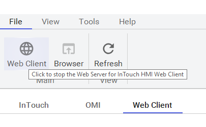
AVEVA System Platform IDE startup screen showing the Home tab with server connection (S01ENG), new project templates (Default Galaxy, Blank Galaxy, InTouch Base, Reactor Demo), and the Recent tab listing the 'TrainingGalaxy' project on server S01ENG.
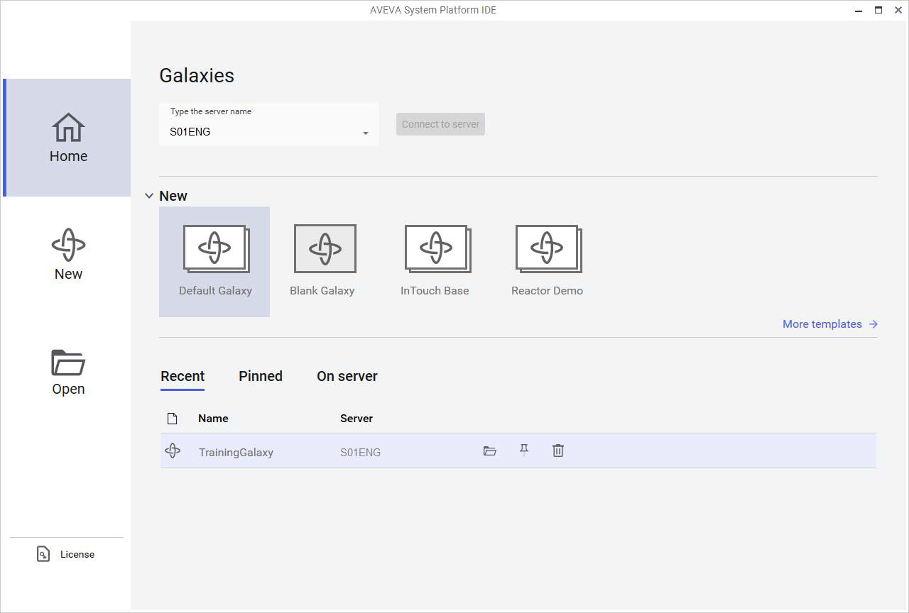
AVEVA System Platform IDE with the Industrial Graphics pane open for TrainingGalaxy, showing the folder hierarchy with .NET Controls, Apps, and Industrial Graphic Library subfolders, used for browsing and selecting graphical components.
12. In the IDE, on the Templates tab, in the Training\Project toolset, double-click $Mixer to open
it for editing.
13. In Content, double-click SwitchedMixingProcess to open it for editing.
14. On the canvas, double-click MixerDropDown to open Edit Animations.
15. In Animations, for Disable, click the drop-down list and select Disabled.
16. Click OK to close Edit Animations.
17. Save and close the graphic.
18. Save and close and check in $Mixer.
Next you will prepare InTouch for using Web Client and then open Web Client.
19. On the Templates tab, in the Training\ViewApps toolset, double-click $MixerView to open
WindowMaker.
20. Click Open to open the selected windows.
21. Click Runtime.
Note:
WindowViewer must be running to provide data and animations for Web Client.
22. Click Development! to return to WindowMaker.
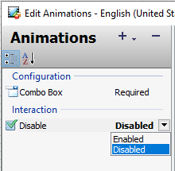
Edit Animations dialog box in WindowMaker showing the Animations configuration panel where the Disable interaction property is set to 'Disabled' via a dropdown menu, used to disable the MixerDropDown control for Web Client compatibility.
23. In WindowMaker, in the top-right corner, click the Web Client fast switch.
After a few moments, the default web browser opens, and the application windows appear in
Web Client.
24. Maximize the web browser.
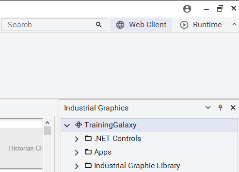
Web Client opened in Chrome browser showing the $MixerView application with alarm summary table, navigation bar with Mixers/Line 1/Line 2 buttons, user info panel, production metrics charts, and the main Mixer100 process view with pump/inlet/outlet components and trend graphs.
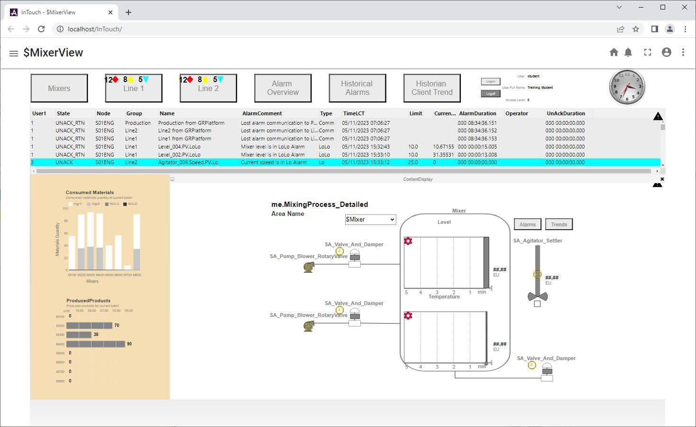
Web Client showing $MixerView after switching to a different mixer via the dropdown selector, with the ContentDisplay area updated to show the selected mixer's process diagram, pump and valve components, and real-time Level and Temperature trend graphs with alarm thresholds visible.
25. In the ContentDisplay window, switch to a different mixer and verify the components of the
selected mixer are displayed.
26. Press and hold the Ctrl key, hover the cursor over the Web Client, and then scroll the mouse
wheel up and down to zoom in and out.
27. Release the Ctrl key.
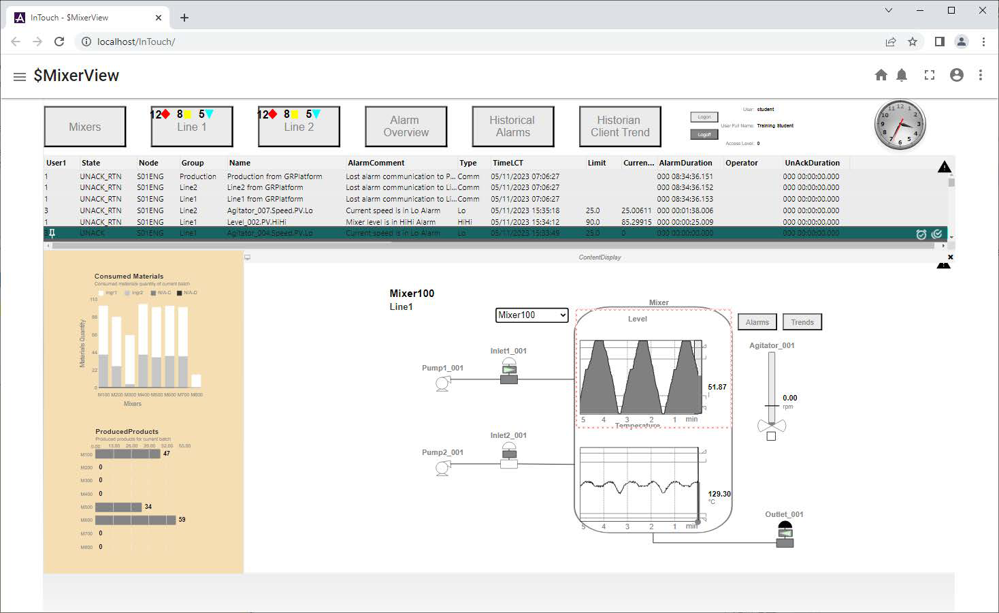
Web Client zoomed-in view of the Mixer100 Line1 process diagram, showing the pump icons (Pump1_001, Pump2_001), inlet valve icons (Inlet1_001, Inlet2_001) with green indicators, the mixer vessel, and Level and Temperature trend graphs with red dashed alarm threshold lines.
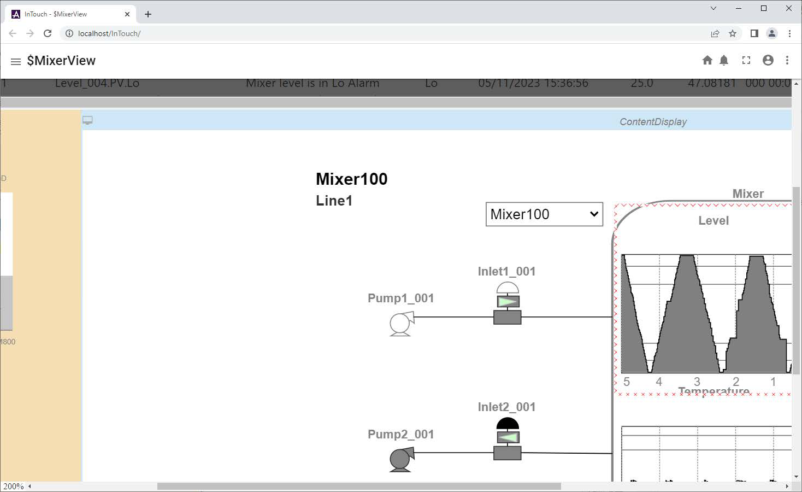
Web Client zoomed-in and panned view showing the ContentDisplay area with Mixer100 process details, inlet valves and pump components on the left, and Level and Temperature graphs with current readings on the right, demonstrating Ctrl+scroll zoom and middle-click pan functionality.
For the next step, first you must be zoomed in.
28. In the Web Client, click and hold down the mouse wheel, and then move up, down, left, and
right to pan.
29. On the right side of the Web Client header, click the Home button.
This will restore the Home view.
30. In the Navigation window, click Alarm Overview and observe the alarms.
31. Close the AlarmAggregationOverview window.
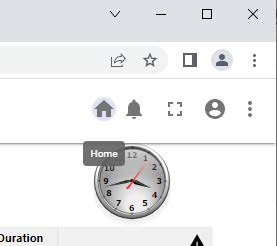
Browser window showing the top toolbar with the Home button tooltip visible, and a partial analog clock widget below, demonstrating the Web Client Home button location in the right side of the header bar.
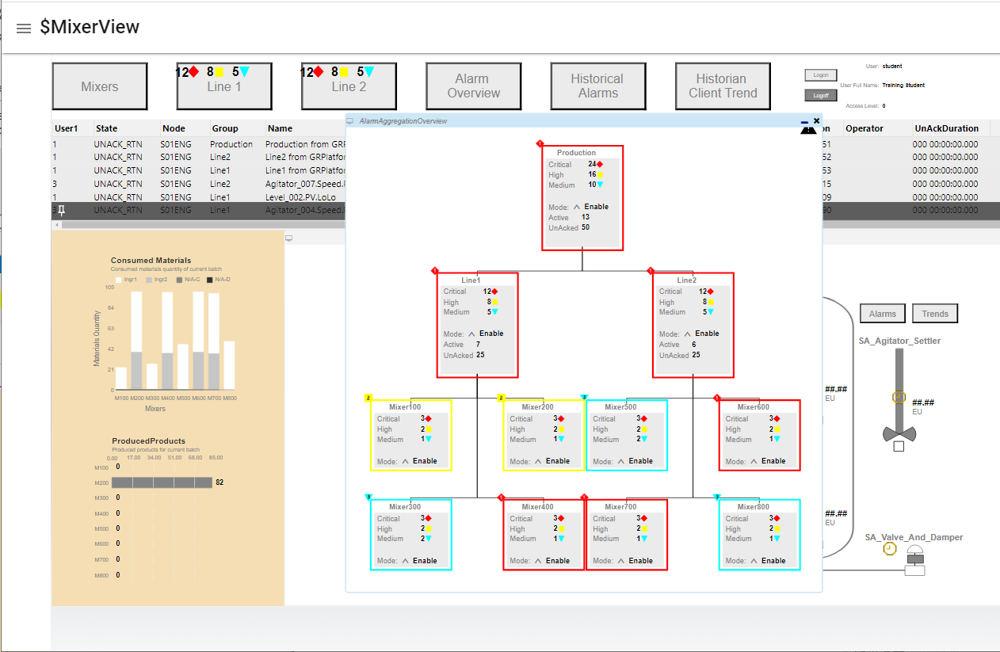
Web Client showing the AlarmAggregationOverview popup window with a hierarchical alarm aggregation tree: Production (top level with 24 critical, 16 high, 10 medium alarms), Line1 and Line2 sub-levels, and individual Mixer100-Mixer800 units with color-coded severity counts and Enable mode status.
32. In the top-left corner, click the Web Client menu.
The Web Client menu appears.
33. In the Web Client menu, expand Training and select Dashboard.
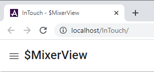
Web Client with the hamburger menu (three horizontal lines) at the top-left corner of the browser, showing the $MixerView title, demonstrating access to the Web Client navigation menu.
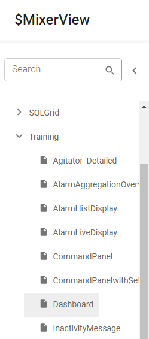
Web Client navigation side menu showing the Training folder expanded with sub-items including Agitator_Detailed, AlarmAggregationOverview, AlarmHistDisplay, AlarmLiveDisplay, CommandPanel, CommandPanelwithSecurity, Dashboard (highlighted/selected), and InactivityMessage.
The Dashboard symbol appears in the Web Client.
34. In the Web Client menu, in the Search field, enter clock, and then select ClockDigital12.
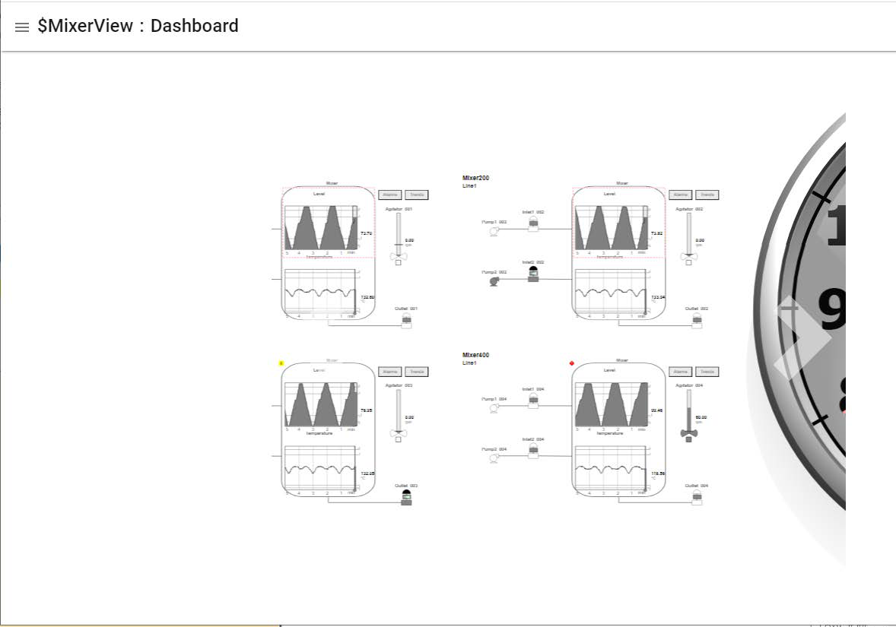
Web Client showing the $MixerView: Dashboard view with a 2x2 grid of four mixer monitoring panels (Mixer200 Line1 and Mixer400 Line1 visible), each displaying real-time Level and Temperature trend graphs, Agitator speed controls with slider, Reset and Trends buttons, and equipment status indicators for pumps, inlets, and outlets.
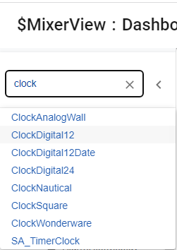
Web Client search menu with 'clock' typed in the search field, displaying search results: ClockAnalogWall, ClockDigital12 (highlighted), ClockDigital12Date, ClockDigital24, ClockNautical, ClockSquare, ClockWonderware, and SA_TimerClock.
The clock fills the web browser.
The clock graphics rely on the local computer time. However, for this graphic, the label has not
been configured. Most graphics from the library require further configuration to be used in Web
Client.
In the next steps, you will use Web Client to interact with features of your application.
35. Click Home.
36. In the AlarmDisplay window, bottom-right corner, click Ack All.
The Ack Comment: dialog box appears.
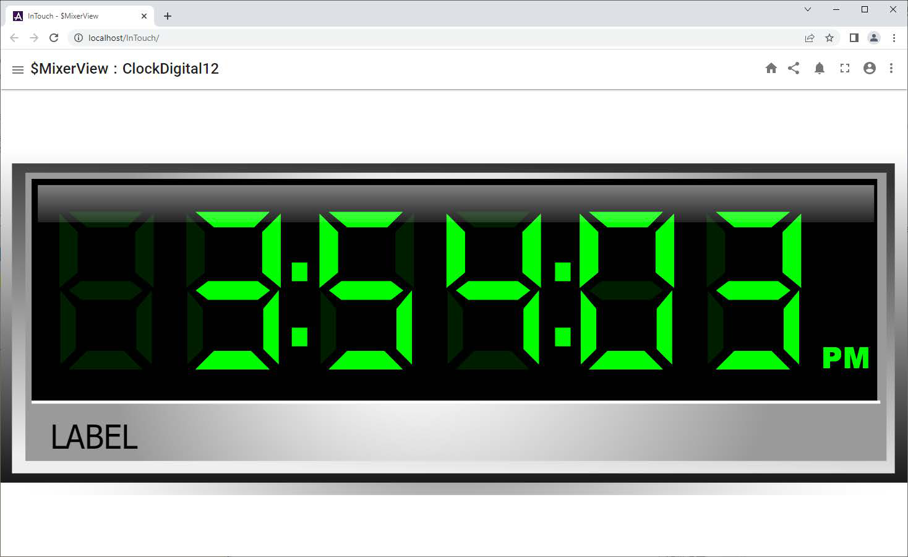
Web Client showing $MixerView: ClockDigital12 filling the entire browser window, displaying a retro-style green seven-segment digital clock showing the current time (03:59:09 PM) with a LABEL placeholder below the digits, demonstrating how library graphics appear in Web Client.
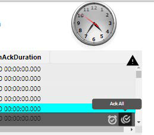
Web Client showing an analog clock widget at the top, an AckDuration alarm duration table with all-zero durations, and an 'Ack All' context menu option displayed on the right-click menu, demonstrating alarm acknowledgment in the Web Client.
37. In Ack Comment, enter ticket issued.
38. Click OK to acknowledge all alarms.
The alarms display as acknowledged.
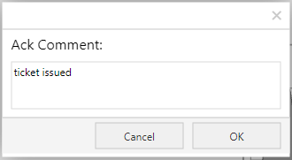
Ack Comment dialog box with a text input field containing the pre-filled comment 'ticket issued', along with Cancel and OK buttons, used to enter an acknowledgment comment when acknowledging all alarms.
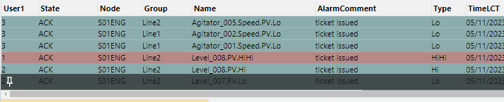
Web Client alarm table showing acknowledged (ACK) alarms for agitator speed low (Agitator_005, Agitator_002, Agitator_001) and level sensor alarms (Level_008 HiHi, Level_008 Hi, Level_007 Lo), all with 'ticket issued' comments and ACK state, on node S01ENG for Line1 and Line2.
Quiz — Test Your Understanding
Q1: What are the key concepts covered in this lesson about Lab 23 – Using the Web Client?
Review the sections above for the main topics, step-by-step procedures, and important configuration details.
Q2: How does this topic relate to AVEVA System Platform?
This is part of the InTouch HMI layer, which integrates with Application Server's Galaxy for a complete visualization solution.
Module 8 — Web Client. AVEVA InTouch for System Platform 2023 Training.
![Web-based SCADA/HMI dashboard for the Mixer process running in Chrome browser at localhost/InTouch/. Shows the $MixerView with a navigation bar (Mixers, Line 1, Line 2, Alarm Overview, Historical Alarms, Historian Client Trend), user info (student/Training Student, Access Level 0), an active alarms table with unacknowledged communication-loss and process-value alarms, left-side production metrics (Consumed Materials and ProducedProducts bar charts), and the main right-side Mixer100 Line1 process view with pumps, inlet/outlet valves, mixer vessel, agitator, and real-time Level and Temperature trend graphs.](../images/page_0537.png)